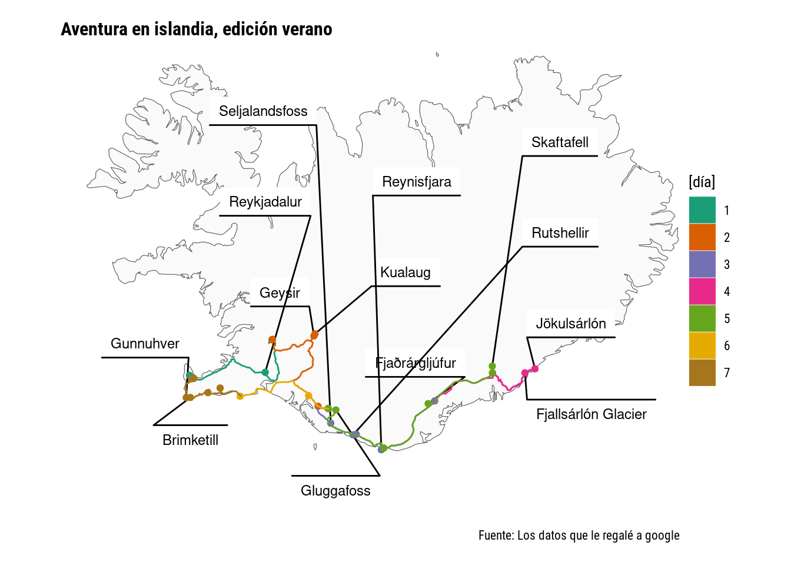

Resulta que en septiembre fui a Islandia (que está en Europa así que cumple la consigna!) y sí, google tiene permiso de guardar datos y todos los meses me dice todo lo que no caminé en comparación con el mes anterior. Lo interesante es que se pueden descargar esos datos, y aunque no logré descargar periodos largos, con paciencia conseguí los datos de la semana que estuve en Islandia.
history <- purrr::map(Sys.glob("datos/islandia/history-*"), read_sf) %>%
data.table::rbindlist() %>%
.[begin >= lubridate::ymd_hms("2023-09-11 04:49:56")] %>%
unique(by = c("begin", "end"))
# Hay una mejor manera de generar las etiquetas?
labels <- history %>%
filter(st_is(geometry, "POINT")) %>%
mutate(as_tibble(st_coordinates(geometry))) %>%
mutate(name2 = c(NA, NA, NA,"Reykjadalur", NA, NA
,"Thingvellir National Park", "Geysir", "Kualaug", NA, NA, "Seljalandsfoss"
,"Rutshellir", NA, "Reynisfjara", NA
,NA , "Jökulsárlón", "Fjallsárlón Glacier", NA
,"Skaftafell", NA, "Fjaðrárgljúfur", NA, "Gluggafoss", NA, NA, NA
,NA, "Volcano Skali", "Brimketill", "Gunnuhver", NA, NA))
mapa_islandia <- rnaturalearth::ne_countries(country = "Iceland", returnclass = "sf", scale = 10)Acá lo dificil fue decidir con que etiquetas quedarme y no poner todas, además de que hacerlo a mano es todo un trabajo. No se realmente si hay una manera de automatizar eso.
ggplot(history, aes(geometry = geometry)) +
geom_sf(data = mapa_islandia, fill = "grey98") +
ggforce::geom_mark_circle(data = labels, aes(description = name2, x = X, y = Y,
filter = !is.na(name2)),
color = NA, expand = unit(0, "cm"), label.fontsize = 9,
con.cap = unit(0, "mm"),
con.type = "straight",
label.buffer = unit(3, "mm"),
label.fill = "white") +
geom_sf(aes(fill = factor(lubridate::day(begin)-10), color = factor(lubridate::day(begin)-10)), shape = 21) +
scale_fill_brewer(palette = "Dark2") +
scale_color_brewer(palette = "Dark2") +
coord_sf(xlim = c(-24.5, -14), ylim = c(63, 66.5)) +
labs(x = NULL, y = NULL, color = "[día]", fill = "[día]",
title = "Aventura en islandia, edición verano",
# subtitle = "Restando canteros y la banquina de Av. General Paz",
caption = "Fuente: Los datos que le regalé a google") +
theme_void(base_size = 10,
base_family = "Roboto Condensed") +
theme(plot.title.position = "plot",
plot.title = ggtext::element_textbox_simple(face = "bold"),
plot.margin = unit(c(0.5, 0.5, 0.5, 0.5), "cm"))
# ggsave("day14.png", device = png, type = "cairo", bg = "white", width = 21, height = 17, units = "cm", dpi = 150)